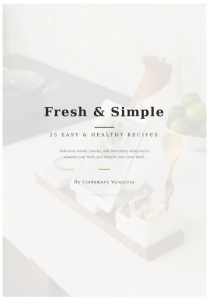
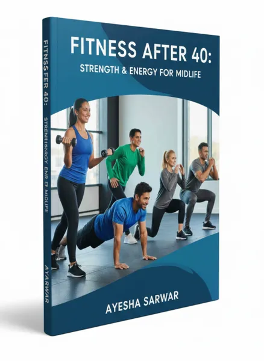

Fresh and Simple
Product profile · Marketplace data 2026-10-14 · Sales-page research 2026-10-14 · Categories: Health & Fitness
- Fresh and Simple is a e-books in Health & Fitness sold through the Digistore24 marketplace by vendor lindamarastein056c, listed since 2026-07-17.
- List price $17.35 (single payment) — checkout, delivery and refunds are handled by Digistore24 itself, not the vendor.
- Buyer protection: no standardized guarantee wording detected — locate the refund terms on the official page before paying.
Interested in Fresh and Simple? The current price, bonuses and guarantee terms live on the vendor's official page:
Check the official sales page
Affiliate link — we may earn a commission at no extra cost to you.

Marketplace record
| Product type | E-books |
|---|---|
| Price | $17.35 (Single payment) |
| Refund window | Per the vendor's sales page — check the official page before buying |
| Vendor | lindamarastein056c (listed since 2026-07-17) |
Vendor's marketplace description
Fresh & Simple – Healthy Recipes for Everyday Life Fresh & Simple is a practical digital cookbook designed for people who want to enjoy delicious, nutritious meals without spending hours in the kitchen. Inside, you'll find 25 easy-to-follow recipes made with simple, accessible ingredients. Each recipe is created to help support a balanced lifestyle while delivering great flavor. What's included: - 25 healthy and delicious recipes - Simple step-by-step instructions - Everyday ingredients - Quick meal ideas for busy schedules - Nutritional balance with protein, fiber, and healthy fats - Perfect for beginners and experienced home cooks Whether your goal is to eat healthier, save time, or discover new meal ideas, Fresh & Simple makes healthy cooking enjoyable and easy. Format: Digital eBook (Instant Download) Language: English
From the vendor's sales page
Page title: WinningPicks - Curated Premium Products
Research method: raw HTML fetch · 5 words on page · quality: thin · researched 2026-10-14. Full research file (MD) ↗
How products like this are delivered
General note about this product type (not vendor-specific instructions): E-books on Digistore24 are delivered as a digital download (usually PDF/EPUB): right after checkout you get a download link or member-area access, and can read on any device. For the exact usage of Fresh and Simple, the official sales page and included materials are the authoritative source.
Good to know
- No guarantee language found in our research of the sales page — confirm the refund window on the official page before you buy.
What is Fresh and Simple?
Fresh and Simple is a e-books in the Health & Fitness category of the Digistore24 marketplace, published by vendor lindamarastein056c and on sale since 2026-07-17. The vendor describes it as follows: "Fresh & Simple – Healthy Recipes for Everyday Life Fresh & Simple is a practical digital cookbook designed for people who want to enjoy delicious, nutritious meals without spending hours in the kitchen. Inside, you'll find 25 easy-to-follow recipes made with s" (vendor's marketplace description, lightly truncated).
Fresh and Simple pricing: what you will pay
The marketplace lists Fresh and Simple at $17.35 (single payment). Digistore24 adds any tax your country requires at checkout, where you see the final amount before paying. There is no separate marketplace-side fee; vendors may offer their own upsells after checkout.
Fresh and Simple refund policy and money-back guarantee
We did not find standardized guarantee wording on the sales page. Refunds for Digistore24 purchases are processed through the platform: request via the support link in your order email, within the vendor's guarantee window shown at checkout. Practical advice: decide inside the window — if the product underdelivers, refund it rather than letting it ride.
Details and mechanics: how Digistore24 refunds work.
Who is Fresh and Simple for?
Based on its Health & Fitness classification and single payment pricing, Fresh and Simple targets buyers looking for health & fitness solutions at an entry-level price. The honest test is not the category but your own situation: will you realistically use it within the refund window? If yes, the price is an investment; if not, it is clutter — regardless of quality.
Is Fresh and Simple legit? What to verify before buying
We do not rate legitimacy — nobody can, without using the product. What you can verify, all on this page: the vendor's marketplace history (listed since 2026-07-17), the verbatim sales-page extracts below (labeled vendor claims — their marketing, not our endorsement), the guarantee terms at checkout, and the delivery method. Red flags to check on any offer: pressure countdowns paired with vague refund terms, testimonials without dates, and vendor sites that hide pricing until checkout.
How do you access Fresh and Simple after buying?
Checkout runs on Digistore24. After payment: E-books on Digistore24 are delivered as a digital download (usually PDF/EPUB): right after checkout you get a download link or member-area access, and can read on any device. Keep your order email — it is your key to the e-books, your refund requests and Digistore24 buyer support.
Fresh and Simple reviews: how to research it properly
Third-party "reviews" of marketplace products are mostly affiliate content — including pages like this one, which earns a commission on purchases. Treat every review (ours included) as a starting point, then verify against primary sources: the vendor's own sales page, the Digistore24 refund policy, and — for health & fitness — independent communities outside the affiliate ecosystem. On this page the sales-page extracts below are quoted verbatim, so you can judge the vendor's claims without clicking away.
How to buy Fresh and Simple safely
- Open the official sales page and read the full offer.
- Confirm the final price and the refund window on the Digistore24 checkout page — that page is binding, not any review.
- Pay inside the Digistore24 checkout (never by bank transfer or off-platform links).
- Save the order confirmation email; note the refund deadline in your calendar.
- Evaluate promptly. Digistore24 buyer support can help if the vendor is unresponsive.
Full research archive for this product (Markdown: complete marketplace record + verbatim sales-page extracts): Fresh and Simple — full data archive (Markdown file: 57578-fresh-and-simple.md).
- Listed price & billing — source: official Digistore24 marketplace API, snapshot 2026-10-14. The checkout page is always the binding source for the current price.
- Sales-page quotes & headline — source: https://winningpicksstore.org/fresh-and-simple, fetched 2026-10-14 (method: raw HTML). Verify: open the official page.
- Guarantee / refund — set by the vendor; confirm on the sales page at purchase time.
- Not verified by us: product quality, outcomes, testimonials — no hands-on test has been performed for this listing.
Frequently asked questions about Fresh and Simple
Answers compiled from the marketplace snapshot (2026-10-14) and vendor sales-page research (2026-10-14); vendor claims are labeled inline.
What is Fresh and Simple?
Fresh and Simple is a e-books sold through the Digistore24 marketplace by vendor lindamarastein056c, listed since 2026-07-17. It is filed under Health & Fitness. Digistore24 handles checkout, delivery and refunds for this product.
How much does Fresh and Simple cost?
The Digistore24 marketplace lists it at $17.35 (single payment). Prices are set by the vendor and can change — the marketplace record above shows the snapshot; the official sales page shows the current price.
Is there a money-back guarantee for Fresh and Simple?
Our sales-page research did not find explicit guarantee language. Many Digistore24 products carry a 60-day money-back guarantee, but this is set per product by the vendor — confirm on the official sales page before buying.
Is Fresh and Simple legit?
We don't rate legitimacy — we publish verifiable data instead: vendor lindamarastein056c (listed on Digistore24 since 2026-07-17), listed on the marketplace since 2026-07-17, with its complete sales-page research archived on this page (vendor claims labeled as such). Read our 6-point evaluation method and judge with the facts — or join the discussion about Fresh and Simple.
Where can I buy Fresh and Simple safely?
Only through the official sales page linked on this site (checkout and refunds run via Digistore24). Verify the price and guarantee there before ordering. That link is an affiliate link — buying through it supports this site at no extra cost to you.
How do I get Fresh and Simple after paying?
Checkout runs on Digistore24: after payment you receive your access or download by email and in your Digistore24 customer account. Delivery details for this product type: E-books on Digistore24 are delivered as a digital download (usually PDF/EPUB): right after checkout you get a download link or member-area access, and can read on any device. If anything fails, Digistore24 buyer support can recover your order.
All 50 buyer questions about Health & Fitness — the full category FAQ.
Discuss Fresh and Simple on Reddit
Community threads are where real buyers compare notes. We link to communities, not to specific posts — threads move, subreddits stay:
- r/Supplements — community discussions that often touch health & fitness.
- r/nutrition — community discussions that often touch health & fitness.
- Search Reddit for "Fresh and Simple" — real-time results, we don't control them.
- Top "review" mentions this year — sort by top, filter by recency yourself.
Related shopping on Amazon
Physical products and gear commonly bought alongside Fresh and Simple:
- Shop supplements on Amazon — top results, Amazon's ranking.
- Bestsellers in supplements — live Amazon list, we don't curate it.
Sponsored: as an Amazon Associate, DigistorePicks earns from qualifying purchases (tag adminstore05-20). Amazon sets its own prices and commissions (typically low single digits — far below Digistore24 vendors' 30–75%). We list Amazon as a convenience for physical goods; it is not an alternative to the digital product above.
Related offers in Health & Fitness

The Zōē Method is a premium 12-week personalized coaching program built around female cycle . Your audience gets personal ondoarding, real coach with 18+ years

Learn Vegan Living with Practical Video Courses Vegan Warrior PRO is a collection of practical videos, tutorials, and courses created for people interested in v

Quantum Heart is a physical, shippable aluminum pendant with three body-facing 650nm visible red-light LEDs and USB-C recharging. Customers can choose one penda

Advanced Features of Teslacare Terahertz Technology Teslacare Terahertz Devices use advanced technology to provide detailed targeting of the human body, which c
Similar price range in Health & Fitness

OSNB is a body shaping system that helps people get back to their youth through fitness. We pay 90% through the funnel.

Affiliate Commission: 80% Product : Ebook Price: $17.99 Target Countries: USA, UK, Canada, Australia, New Zealand

Affiliate Commission: 80% Product : Ebook Price: $17.99 Target Countries: USA, UK, Canada, Australia, New Zealand

Affiliate Commission: 80% Product : Ebook Price: $17.99 Target Countries: USA, UK, Canada, Australia, New Zealand
Related searches
Where to check it out
Read the vendor's full sales page (current price, guarantee terms and bonuses are listed there):
View official sales page
That link is an affiliate link — if you buy through it we earn a commission from the vendor at no extra cost to you.
Sources & further information
- Official sales page (current price, guarantee, bonuses): winningpicksstore.org/fresh-and-simple (affiliate link)
- Public Digistore24 product page: checkout-ds24.com/product/709170
- Full research file (Markdown, versioned): content/products/57578-fresh-and-simple.md
- Marketplace category: Health & Fitness
How we evaluate products like Fresh and Simple
Six checks, all on official marketplace numbers — earnings/sale ÷ cancel-rate skepticism × funnel fit. Read the full evaluation method · our research standards & labeling.
Questions, or own experience with Fresh and Simple?
We publish hands-on reviews only after buying a product ourselves — but your experience helps other readers: start or join the discussion about Fresh and Simple on GitHub. Found a wrong number? Report a correction — every page shows its data dates, and corrections are applied to the whole site.